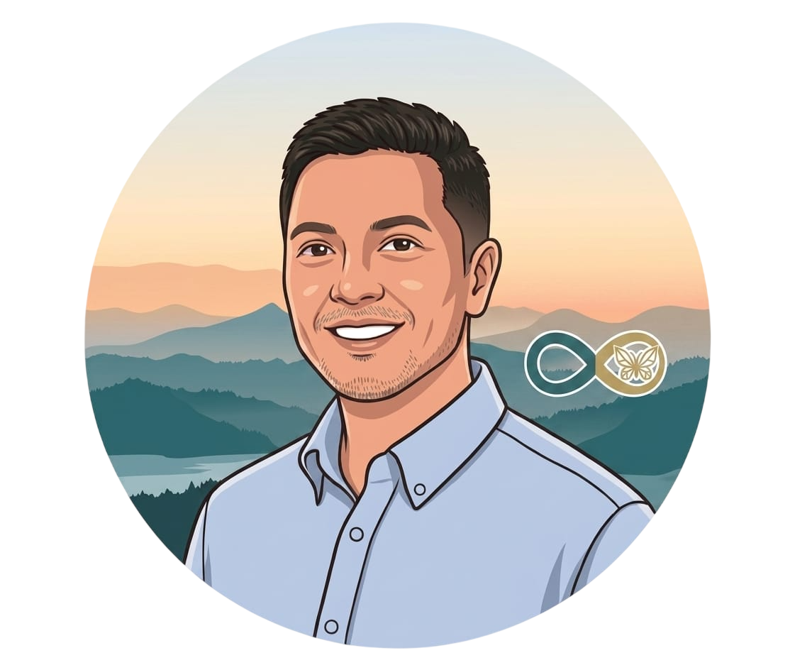

Sydney, Australia — Solutions Engineering Leader
I help enterprises move from AI experimentation to systems that hold up in production. Across AI, data, and graph, I bridge deep technical architecture with commercial rigour — building platforms designed to last, not just to demo.

At a Glance
01 — About
Enterprise AI and data architecture leader based in Sydney. I architect production AI and data systems where reasoning, data, and decisions are traceable by design, enabling organisations to deploy AI with confidence and measurable commercial impact.
My career spans Teradata, EY, McKinsey/QuantumBlack, and Microsoft Azure, each chapter deepening a conviction that the right architecture changes everything. I currently lead Solutions Engineering at Neo4j ANZ, working with some of Australia's most complex data environments.
I focus on helping enterprises build AI systems, data platforms, and graph intelligence capabilities that are production-ready across financial services, government, and resource sectors — not just architecturally sound in theory, but operationally resilient in practice.
I write under the banner Value Engineered, exploring how rigorous value thinking should shape every AI and data architecture decision.
02 — Writing
LoanGuard AI
A multi-agent GraphRAG compliance platform built on Neo4j and Claude. Graph-native audit trails, APRA regulatory data, and what vanilla RAG misses in production.
Entity Risk AI
Agents don't break governance. They prove it was never there. A reference architecture for enforcing what AI can actually do at execution — not just what policy says it should.
03 — Experience
Neo4j
Leading a regional SE team across enterprise, public sector, and commercial segments, translating AI, data, and graph capability into production-grade architecture for Australia and New Zealand's most complex data challenges.
Microsoft
Pre-sales architecture across Azure Data and AI for enterprise and public sector customers throughout APAC, acting as Territory CTO and CDO advisor.
McKinsey and Company / QuantumBlack
Advanced analytics and data strategy for global clients in mining, telco, and media, delivering production ML systems with measurable commercial impact.
Ernst and Young
Enterprise data integration and entity resolution for financial services M&A programs, advising on governance-driven architecture and regulatory readiness.
Teradata
Enterprise data modelling and analytics platform delivery across banking, telco, transport, and retail clients throughout APAC.
04 — Speaking and Advisory
05 — Contact
If you're working on an AI, data, or graph problem in financial services, government, or any regulated environment, I'd like to hear from you.